Problem 1
Interference Pattern from a Hexagonal Array of Wave Sources
Motivation
Visualizing wave interference helps us understand fundamental concepts of physics like:
- Superposition: Waves add or cancel depending on their relative phase
- Coherence: Stable phase relationships are key to recognizable patterns
- Symmetry in Physics: The layout of sources creates geometrically rich structures
When wave sources are arranged in a regular hexagon, the interference pattern becomes beautifully complex. These types of patterns are not just visually pleasing — they also appear in real-life systems like:
- Speaker arrays
- Laser beam interference
- Quantum interference experiments
- Water ripple tanks in educational settings
Assumptions and Parameters
- All sources emit circular, coherent waves simultaneously
-
Identical parameters for all sources:
-
Amplitude \(A = 1.0\)
- Wavelength \(\lambda = 1.0\)
- Frequency \(f = 1.0\)
- The layout is a perfect regular hexagon
- The simulation includes comparisons with 1 and 2 sources for clarity
- Observed at time steps \(t \in \{0, 0.25, 0.5, 0.75, 1.0\}\)
- The superposition principle is used:
$$ Z(x, y, t) = \sum_{i=1}^{N} A \sin(k r_i - \omega t + \phi) $$
Simulation and Plotting (1 Source, 2 Sources, 6 Sources)
import numpy as np
import matplotlib.pyplot as plt
from matplotlib import animation
from IPython.display import Image
# Parameters
A = 1.0
wavelength = 1.0
k = 2 * np.pi / wavelength
omega = 2 * np.pi
phi = 0
x = np.linspace(-5, 5, 600)
y = np.linspace(-5, 5, 600)
X, Y = np.meshgrid(x, y)
# Source definitions
def generate_single_source():
return [(0, 0)]
def generate_two_sources(sep=4.0):
return [(-sep/2, 0), (sep/2, 0)]
def generate_hexagon_sources(radius=2.0):
angles = np.linspace(0, 2 * np.pi, 6, endpoint=False)
return [(radius * np.cos(a), radius * np.sin(a)) for a in angles]
# 2D Interference Plot
def plot_2d_interference(t, sources, title_suffix=""):
Z = np.zeros_like(X)
for sx, sy in sources:
r = np.sqrt((X - sx)**2 + (Y - sy)**2)
Z += A * np.sin(k * r - omega * t + phi)
plt.figure(figsize=(6, 6))
plt.contourf(X, Y, Z, levels=150, cmap='plasma')
for sx, sy in sources:
plt.plot(sx, sy, 'ko')
plt.title(f"2D Interference Pattern {title_suffix} (t = {t:.2f})")
plt.xlabel("x")
plt.ylabel("y")
plt.axis('equal')
plt.colorbar(label='Wave Displacement')
plt.grid(True)
plt.show()
# Snapshots for each source layout
for t_snapshot in [0, 0.25, 0.5, 0.75, 1.0]:
plot_2d_interference(t_snapshot, generate_single_source(), "(1 Source)")
plot_2d_interference(t_snapshot, generate_two_sources(), "(2 Sources)")
plot_2d_interference(t_snapshot, generate_hexagon_sources(), "(6 Sources)")
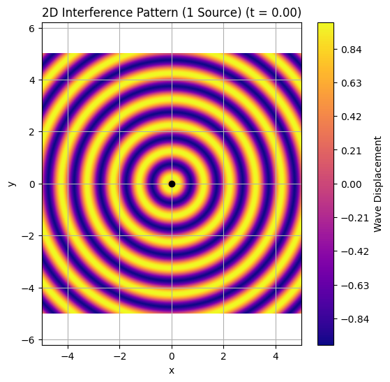

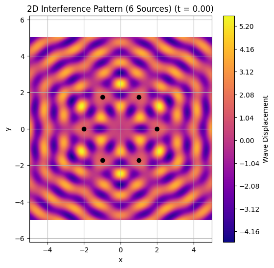
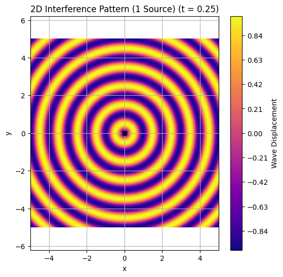
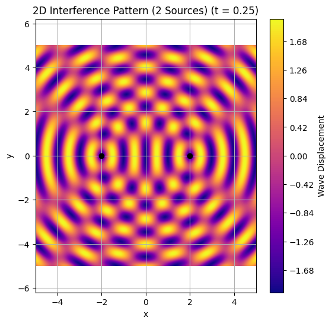
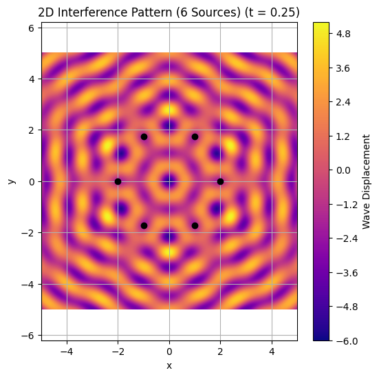
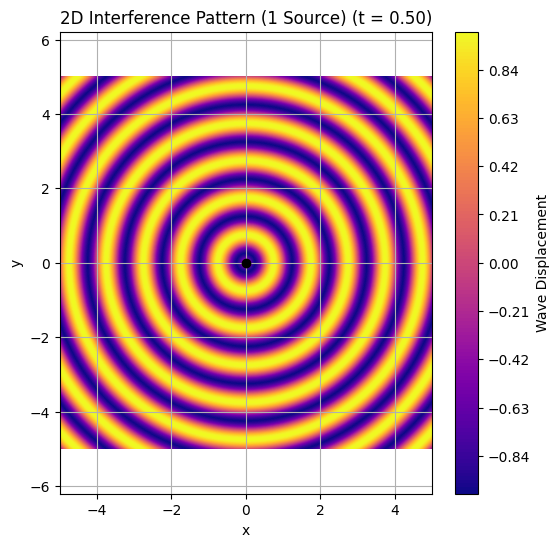

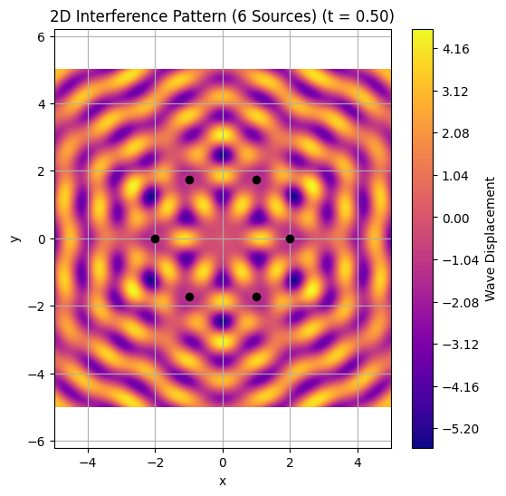
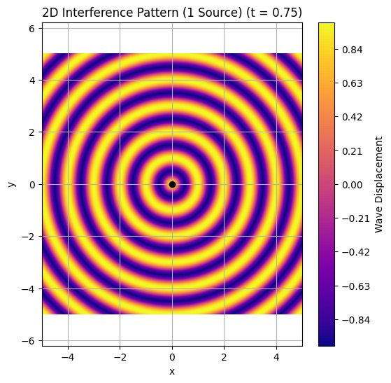
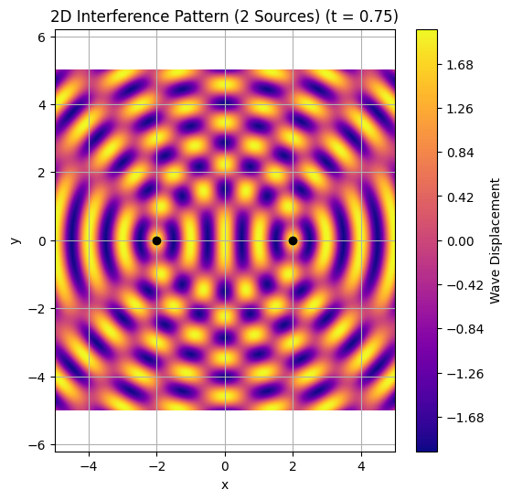
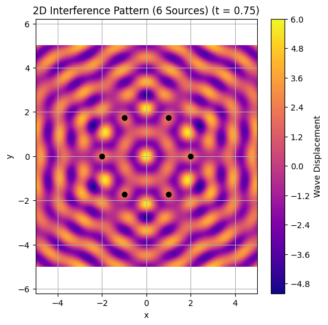

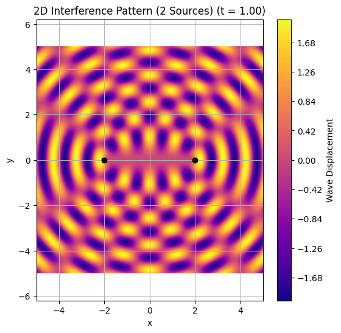

3D Interference Surface (Hexagonal Case)
def plot_3d_interference(t, sources):
from mpl_toolkits.mplot3d import Axes3D
Z = np.zeros_like(X)
for sx, sy in sources:
r = np.sqrt((X - sx)**2 + (Y - sy)**2)
Z += A * np.sin(k * r - omega * t + phi)
fig = plt.figure(figsize=(10, 6))
ax = fig.add_subplot(111, projection='3d')
ax.plot_surface(X, Y, Z, cmap='viridis', edgecolor='none')
ax.set_title(f'3D Interference Surface (t = {t:.2f})')
ax.set_xlabel('x')
ax.set_ylabel('y')
ax.set_zlabel('Amplitude')
plt.tight_layout()
plt.show()
plot_3d_interference(0, generate_hexagon_sources())

Animated GIF (Hexagon)
def create_animation_gif(sources, filename="interference.gif", duration=2.0):
fig, ax = plt.subplots(figsize=(6, 6))
# İlk Z'yi hesapla ve vmin/vmax belirle
t0 = 0
Z0 = np.zeros_like(X)
for sx, sy in sources:
r = np.sqrt((X - sx)**2 + (Y - sy)**2)
Z0 += A * np.sin(k * r - omega * t0 + phi)
img = ax.imshow(Z0, cmap='plasma', origin='lower', extent=[-5, 5, -5, 5],
vmin=-len(sources), vmax=len(sources))
ax.set_title("Interference Animation")
ax.set_xlabel("x")
ax.set_ylabel("y")
def update(frame):
t = frame / 20
Z = np.zeros_like(X)
for sx, sy in sources:
r = np.sqrt((X - sx)**2 + (Y - sy)**2)
Z += A * np.sin(k * r - omega * t + phi)
img.set_data(Z)
return [img]
ani = animation.FuncAnimation(fig, update, frames=40, interval=duration*1000/40, blit=True)
ani.save(filename, writer='pillow')
plt.close()
create_animation_gif(generate_hexagon_sources())
ShowImage(filename="interference.gif")
üîó View Interference Animation (GIF)
{kind=link}
Observations
-
üü¢ Constructive Interference Wave crests align, creating bright/elevated zones
-
üî¥ Destructive Interference Crests and troughs cancel, producing dark/flat regions
-
üî∑ Hexagonal Symmetry The six-source layout reveals rich, six-fold symmetry
-
üîÑ Temporal Dynamics The pattern evolves with time, creating a breathing effect
Conclusion
This simulation reveals the beauty and complexity of wave interference from coherent sources arranged in geometric patterns. By exploring 1, 2, and 6 source cases, we observe how interference builds from simple to complex.
Key Takeaways:
- üìê Geometry defines interference
- üìä Wavelength controls fringe spacing
- ü߆ Simple wave rules produce complex patterns
Explore Further:
- Add triangular, square, or circular layouts
- Introduce phase offsets or noise
- Apply to optics, acoustics, or quantum wave interference
❓ Frequently Asked Questions (FAQ)
❓ Why include 1 and 2 sources?
To understand wave interference gradually, starting from the simplest case.
❓ Why a hexagon?
Hexagons offer natural symmetry and occur in crystals, molecular structures, and wave physics.
❓ Can this be animated?
Yes, via matplotlib.animation and pillow for exporting .gif.
❓ Are the waves realistic?
They represent idealized, perfectly coherent sources for conceptual clarity.
❓ How do I add non-coherence?
Add random phase differences or amplitude noise to each source.